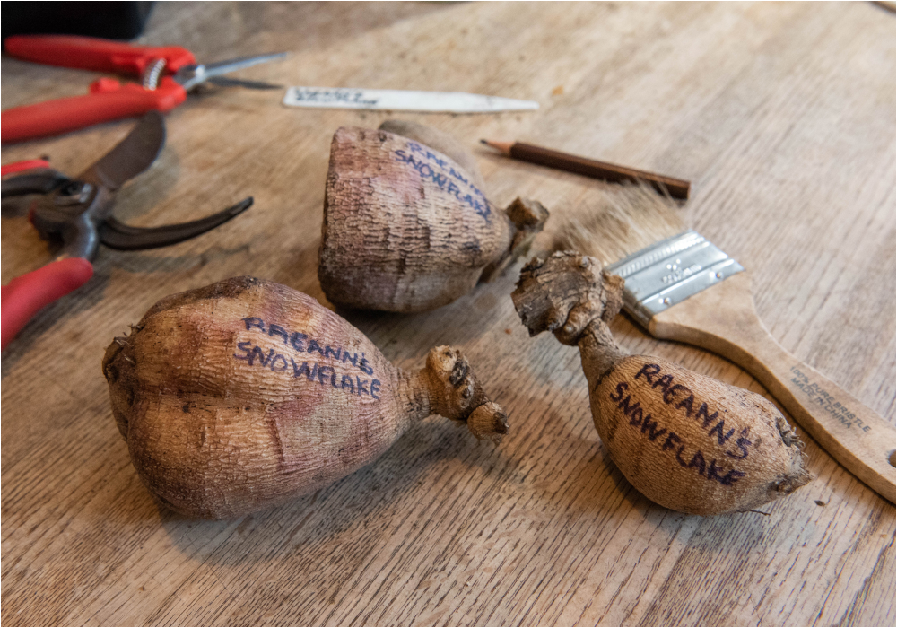

|
Hello dahlia friends!
What a fun and fantastic New Year Celebration
and Party we had! It was a fabulous event to
kick off the new year and we’re thrilled that so
many of you were there to share it! Thank you
for bringing such yummy dishes to share as we
enjoyed the food and conversation making the day
extremely memorable and fun. YDS member and
dahlia gardener extraordinaire Dr. Panat
Cherdchu was our guest presenter. Panat shared a
slide presentation with us about his own garden,
and how he uses color theory to plan his garden
spaces. We all were very inspired as we were
treated with images of his garden and dahlias.
It was an honor to have Panat share his
expertise and the design elements he considers
that make his garden a showcase.
Now that the days are getting longer, it’s time
for all of us to start gearing up for our new
growing season. We’re excited for what 2023 will
have in store for us all, for our gardens and
for YDS. We have a new
Meetings Page
on our website where we have listed out program
dates through June. There are lots of wonderful
In Person and Zoom meetings so mark our club
meetings on your calendar so you can join the
fun.
Be sure to join us for our next meeting via Zoom
on Saturday, February 4. Trevor Hoff from Cable
Bay Dahlias will join us to share a slide
presentation about his hybridizing program and
growing dahlias from seed. With all the interest
now in growing dahlias from seed it’s a meeting
you won’t want to miss. We will all learn a ton
from Trevor. Hope to see you there!
– Misty & Carol
|
|
February 4th Meeting
Growing Dahlias From Seed: May the Odds Be Ever
in Your Favor with Trevor Hoff

Don’t be intimidated or discouraged to grow
dahlias from seed or feel pressure to have
successful results. Trevor was once given bad
advice that he would get undesirable results
when growing dahlias from seed but he persisted
and discovered in his dahlia growing career
there are many steps that you can take to
increase the odds of growing beautiful dahlias
from seed. We will discuss topics including goal
setting, garden planning, seedling evaluation
and documentation. Then by next year you could
be having a blast growing seedlings from dahlia
seeds taken from your own garden.
For the past three years dahlia grower and
novice dahlia breeder Trevor Hoff of Cable Bay
Dahlias in Nanaimo, BC has been enjoying the
extreme diversity that growing dahlias from
seeds brings. With over 3800 seeds collected,
counted and stored in 2022 he is ready to see
what beauties will bloom in his garden this
year. Many dahlia breeders keep their breeding
information secret in hopes that it will give
them an edge up on the competition. But Trevor
is committed to sharing everything and anything
he has learned on his journey. Join us as Trevor
shares what he has learned along his breeding
journey.
 cablebaydahlias
cablebaydahlias
 cablebaydahlias
cablebaydahlias
Location:
Virtual (Zoom)
Zoom Link:
https://us06web.zoom.us/j/82181368908?pwd=SklHbjBWZDFuMDJKNXNtdGhRZHFrZz09
Date & Time:
Saturday, February 4, 2023, 12:00pm to 1:30pm (
*log in at 11:45 to say hello and get settled.
Meeting will start promptly at 12:00pm
)
|
|
Member Spotlight
Lucinda Eye

Photo 1 by Misty Florez, 2-5 by Lucinda Eye
lucindaeye
My dahlia addiction started innocently enough. A
garden club friend gave me some of her beautiful
dahlia blooms to take to my mother in the
nursing home. I saw immediately how much she
appreciated them and I couldn’t get enough. The
next year I planted a few and began making
arrangements. Each year I bought a few more and
soon ran out of space in my beds. After I
retired, my husband made me several new beds and
they are all now full.
I am a retired teacher who had no gardening
experience prior to growing dahlias. I had
joined a garden club hoping to learn something
about gardening. The first dahlias I grew did
very well but I had so much to learn. I have
made many mistakes along the way but I am
learning more every year.
This past year I planted 73 dahlias. It was the
first year I started them in my basement hoping
to get a jump on the season. I also added drip
irrigation which helped with mildew but it was a
challenge deciding on how long to run the water.
The hot weather was a challenge this year so I
am exploring using shade covers next year.
This year I had the privilege of meeting Misty
and Carol in person. They surprised me by
stopping by for a visit while they were in
Virginia for the ADS National Dahlia Show. We
had a great time visiting with them and several
of my garden friends. They took several of my
dahlias back to the ADS show and entered them in
the show. It was fun seeing them on display
there when we went to the meeting several days
later.
My mother has since passed but I now have a new
purpose for my addiction. Every year my garden
club comes to my house and we make flower
arrangements for a local nursing home. I provide
the dahlias and other members bring some of
their flowers and filler from their gardens.
This year we made 136 small arrangements for the
nursing home.
I am often asked if I would sell my flowers and
my answer is always the same. They are not for
sale but you may have all you want. My dahlias
are a gift from God for me to share with the
world.
|
|
Dahlia Tip
Write Down and Keep Inventory of Your Dahlias
By Carol Palmer & Misty Florez

Photo by Misty Florez
Checking your dahlias occasionally over the
winter is a good idea, but it’s also a great
opportunity to begin creating an inventory of
all the cultivars you have stored, and the
quantities of each, if you haven’t already done
that. Aside from what dahlias you have divided
and are storing, you probably also purchased
dahlias to add to your ever growing collection.
Knowing exactly what cultivars and how many
tubers of each you have on hand (and coming in)
is invaluable as you begin laying out your
dahlia garden plan for 2023. A basic spreadsheet
is an easy and accurate way to keep track of
your tuber inventory and any changes to it over
the winter, or even a simple pencil and notebook
list will do. Get started and keep it simple!
It can be as easy as creating one column for the
cultivar name and one for quantity. Get a little
fancy with a spreadsheet formula and create a
column to automatically calculate your inventory
as you add to your collection or subtract for
loss.
Remember to keep track of any new cultivars and
quantities you’ve ordered, and include them to
your inventory list as you purchase tubers. It's
easy to forget what you’ve already ordered, but
if they’re noted on your list or spreadsheet, it
won’t be a surprise when they show up in your
mailbox and you won’t be scrambling in the
spring to make extra space in your garden.
A little time spent now will also benefit you
during the growing season. It is helpful to have
your list handy as you can easily take notes on
cultivars you like, tubers that didn’t come up
and those that you decide to cull. When you are
ready to dig up clumps at the end of the growing
season, your list will help prioritize the
dahlias you want to divide first and you won’t
be wondering if or when you had last seen that
dahlia in your garden.
Taking a little time now to account for each
cultivar you have and those that you will be
adding will save you loads of time in the
Spring. It will be rewarding to watch your
garden tasks come together smoothly and
according to plan.
“Organizing is what you do before you do
something so that when you do it, it is not
all mixed up.”
~ A. A. Milne
|
|
Pick Up or Ship Your Tuber Order

Terri Reese picking up her tubers and growing
supplies
Photo by Misty Florez
Be sure to sign up and let us know if you plan
on picking up your tuber order at one of the
upcoming club meetings on March 5th or May 7th
at Spence Farm. Alternatively you can sign up to
have us ship your order in the early spring
weather allows. (Shipping rates will be
calculated and billed separately)
Custom pickups can be arranged by emailing Misty
or Carol at info@yankeedahliasociety.com
Sign up to pick up or ship your tuber order
|
|
Save-the-Date
YDS 2nd Annual Dahlia Bloom Exhibit

Photo by Andrea Campbell
Mark your calendars for Saturday, September 30
and Sunday, October 1, 2023 for the 2nd Annual
YDS Dahlia Bloom Exhibit we will hold this year
at Spence Farm in Woburn, MA. It was wonderful
to have our members display beautiful dahlia
blooms from their gardens to share with the
public at our display last year.
Tell your friends and family that they will want
to come and see the Yankee Dahlia Society Dahlia
Display. We want to have as many of your dahlias
as possible and are expecting a display of
nearly 500 blooms. It will be a wonderful
weekend, to share our love for dahlias and put
on a fantastic display of blooms.
We will need your dahlia blooms and your help!!
This is going to be an extraordinary event and
with many hands it will be lots of fun and much
easier to execute. Please be sure to save the
dates and some time between Friday, September
29th (as we’ll be setting up on Friday) with the
display on Saturday, September 30th and Sunday,
October 1st. We are already in the beginning
stages of planning to make sure we have all the
details covered. Please use the SignUp Genius to
let us know that you will save the date and can
help!
Assistance & Planning Team:
We will be in need of club members to volunteer
to help with the planning and the execution of
the weekend's events. There are a variety of
tasks to make our annual YDS Dahlia Exhibit a
success. If you have time to help and can sign
up that would be greatly appreciated. Many hands
will make it fun and light work. The planning
team will meet over the next few months. Thank
you so much for stepping up to help! We can't do
it without you.
Upcoming Planning meetings:
March 5th & May 7th
Planning meetings will be held at 10:15 am, 45
minutes before the club meeting begins.
Sign up today & be part of the Dahlia Bloom
Exhibit Team
|
|
YDS Website
New Meetings Page

Check out our new Meetings Page and save the
dates for club meetings & events so you don’t
miss out. We also want to make sure everyone
knows about the wonderful new feature on our
website with a link to our Zoom Meetings. Simply
login to the YDS website and click on “Show
Details” for Zoom Link access.
|
|
American Dahlia Society
2023 Bulletin - January

Photo by Misty Florez
Have you seen the latest copy of the ADS
Bulletin?
The first issue of the year was delivered just a
few weeks ago. We are flipping through the pages
reading the wonderful articles and loving the
new magazine style layout with full color
images. Did you see our club report? Check out
page 41 with our article and see the YDS members
pictured.
If you would like to purchase a copy of the ADS
January Bulletin we have them available through
our website.
https://www.yankeedahliasociety.com/shop/supplies
Join the American Dahlia Society or renew your
annual membership through YDS, email
info@yankeedahliasociety.com
with the subject line “ADS Registration” and
receive your copy direct to your door.
ADS is the national organization
Benefits include:
-
Access to the members-only section of the ADS
website, with in-depth information about
everything to do with dahlias
-
Three Bulletins packed with information and
updates from local chapters including YDS.
-
A copy of the Classification & Handbook of
Dahlias
-
Supporting the network of Dahlia Shows,
Judging Roster & Show Reports
-
Support the mission of dahlia research, trial
gardens, classification system and seedling
evaluations
-
USA Individual Membership (1-person,
1-Classification book)
$30
-
USA Household Membership (2-people,
2-Classification books)
$35
-
Follow ADS on
Facebook
and
Instagram
|
|
Bulk Soil Purchase

Photo by Misty Florez
It may be winter but we are getting ready for
spring and planting season. Potting up tubers
indoors mid-spring will give you a jump start on
the growing season.
This year we are excited to offer a Pre-Order of
ProMix potting soil. Great for starting your
dahlia tubers and for general all purpose
potting mix. Place your order now and we’ll have
it ready for you to pick up at the March 5th
meeting or at your convenience by coordinating
with Misty or Carol.
Email:
info@yankeedahliasociety.com
Subject:
I’d like to order ProMix
Include PickUp Date:
March 5 or arrange a date with Carol & Misty
-
ProMix BX with Mycorrhizae and Biofungicide
(60lb compressed bale)
$65.00/bale
-
ProMix BX with Mycorrhizae and Biofungicide
(25lb bag)
$35.00/bag
|
|
2023 American Dahlia Society National Show in
Portland, Oregon

Blooms pictured left to right: Hollyhill
Black Beauty, Allen's Tsunami, Scott's
Snocap, Felida Splendor, Pooh, RaeAnn's
Gemini
Registration has opened for the 2023 ADS
National Show being hosted by Portland Dahlia
Society in Portland, Oregon. We have booked our
flights, hotel and registered for the show and
tours and will be counting down the days for the
big trip August 24 - 28, 2023.
Check out Larry Smith’s YouTube videos sharing
details about Portland and the Show details. We
are getting very excited. The Garden tours are
sure to be spectacular; Swan Island, the private
home gardens of PDS members Dan and Vicki
Baulig, Judy Hargreave, Ted and Margaret Kennedy
of Hollyhill Dahlias. It is going to be a
fantastic opportunity to meet experienced dahlia
growers on the West Coast and see all their
beautiful blooms brought to the show. Carol and
I (John and Nina) will be there! It would be
wonderful to have you there too! Let us know if
you plan to attend.
Check out the PDS website for more information
and the registration forms! Fill it out and mail
in your payment. Don’t delay. Tours will book
fast.
https://www.portlanddahlia.com/
 Show Overview, Hotel Amenities, Portland
Attractions & Things To Do
Show Overview, Hotel Amenities, Portland
Attractions & Things To Do
2023 ADS National Show - Optional Tour Bus
Information
|
|
Dahlia Forms
Ball
Cultivar: Ferncliff Rusty

Photography by: Misty Florez
|
|
SignUp Genius - Monthly Volunteer Link
2023 Volunteer Activities - SignUp Genius
As things are a bit slower this time of year, do
you have some extra time to help out the club?
Come and join us as there is something we are
always working on. Spring is around the corner
and we need to get the remaining tubers labeled
and start organizing and making plans for our
2023 YDS Growing Partners and the tubers we will
grow out for club stock.
Check out the SignUp Genius for dates, times and
to join us! We greatly appreciate all the member
volunteer time and it’s always a lot of fun to
get together. Don’t see a day/time on the
calendar but you have time to help? Please reach
out (text or email) and let us know your
availability and if there is something you would
like to help with otherwise we will surely have
a job for you. Thank you!
|
|
|
Upcoming Meetings & Events
See All Meetings
Saturday, February 4th:
Zoom meeting: The Hybridizing Process and
Dahlias From Seed with Trevor Hoff
Sunday, March 5th:
Hands On Seasonal Demonstration and Workshop @
Spence Farm, Woburn MA
|
|
|
|
|